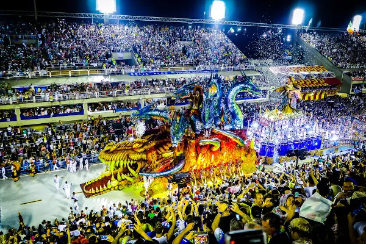
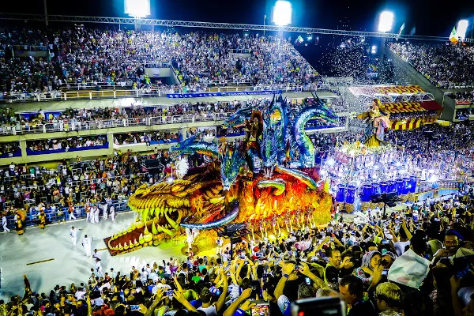
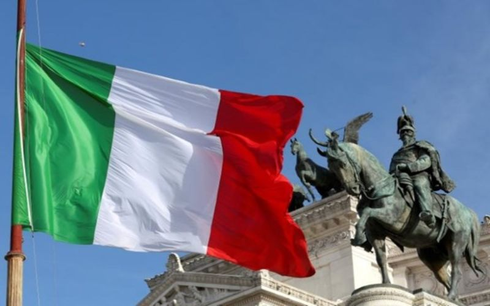
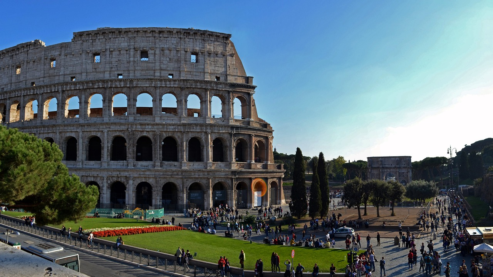
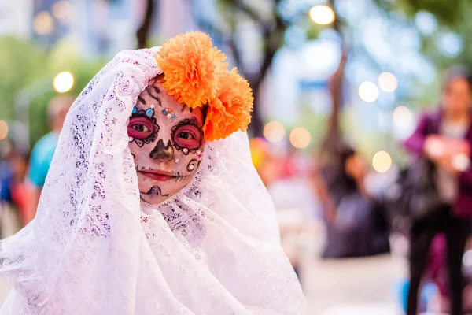
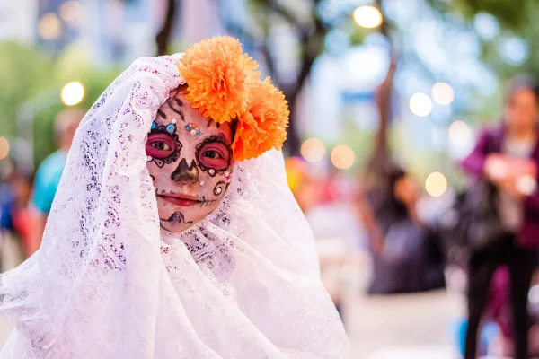

EXPLORAÇÃO DE CULTURAS
BRASIL
A Rica Tapeçaria Cultural Brasileira: Uma Síntese A cultura brasileira é um mosaico vibrante, resultado da miscigenação de diversos povos e influências ao longo dos séculos. Formação: Povos Indígenas: Os primeiros habitantes do Brasil contribuíram com costumes, crenças e conhecimentos sobre a natureza. Colonização Portuguesa: A língua portuguesa, a religião católica e diversos costumes foram introduzidos pelos colonizadores. Escravidão Africana: Os africanos trouxeram suas tradições, religiões e culinária, enriquecendo ainda mais a cultura brasileira. Imigração: Italianos, alemães, japoneses e outros povos contribuíram com suas culturas, formando uma sociedade multicultural. Diversidade Regional: Cada região possui suas particularidades: A cultura nordestina, com suas festas juninas e a música de raiz, é diferente da cultura gaúcha, com suas tradições de origem europeia. Influência geográfica: O clima, a vegetação e a história de cada região moldaram seus costumes e tradições. Elementos da Cultura Brasileira: Linguagem: O português é a língua oficial, mas há diversos dialetos e influências de outras línguas. Religião: O catolicismo é a religião predominante, mas as religiões de matriz africana e outras crenças também são importantes. Música: O Brasil é conhecido por sua rica diversidade musical, com gêneros como o samba, o forró, a bossa nova e a música sertaneja. Literatura: A literatura brasileira abrange desde a poesia de Gonçalves Dias até os romances contemporâneos. Artes Visuais: A pintura, a escultura e a arquitetura brasileira refletem a diversidade cultural do país. Gastronomia: A culinária brasileira é variada e saborosa, com influências indígenas, africanas e europeias. Em Resumo: A cultura brasileira é um patrimônio valioso, resultado de um processo histórico complexo e rico. A miscigenação de diferentes povos e a diversidade geográfica contribuíram para a formação de uma identidade cultural única e vibrante.
 


ITALIA
A Itália: Uma Jornada pela Terra da Beleza e da História A Itália, com sua rica história, arte vibrante e culinária irresistível, é um país que encanta a todos. Sua cultura, marcada pela família, religião e uma paixão pela vida, é um mosaico de tradições que se estendem por séculos. Um Povo Alegre e Hospitaleiro: Família e Comida: Os italianos valorizam profundamente a família e as refeições em conjunto. Os almoços de domingo são momentos especiais para reunir os entes queridos. Festas e Tradições: O Carnaval de Veneza e a Festa da República são apenas alguns exemplos das festividades que celebram a rica cultura italiana. Religião: O catolicismo moldou a sociedade italiana por séculos, influenciando costumes e celebrações. Uma Herança Artística e Histórica: Arte e Arquitetura: A Itália é um museu a céu aberto, com obras-primas de Leonardo da Vinci, Michelangelo e outros grandes artistas. História Milenar: A Roma Antiga deixou um legado duradouro, com monumentos como o Coliseu e o Panteão. Artesanato: A cerâmica de Faenza e o vidro de Murano são exemplos da habilidade artística dos italianos. A Cozinha Italiana: Um Prazer para os Sentidos: Massas e Molhos: A pizza, o nhoque e os diversos tipos de pasta são conhecidos mundialmente e fazem parte da dieta italiana. Ingredientes Frescos: Os italianos valorizam ingredientes frescos e de qualidade, preparando pratos saborosos e nutritivos. Uma Língua Melodia: Diversidade Linguística: Além do italiano padrão, existem diversos dialetos regionais, cada um com suas peculiaridades. Herança Latina: O italiano evoluiu do latim vulgar e possui uma rica musicalidade. Um País Atemporal: A Itália é um país que encanta pela sua beleza, história e cultura. Seus habitantes, alegres e apaixonados pela vida, fazem da Itália um destino inesquecível para qualquer viajante. Gostaria de saber mais sobre algum aspecto específico da cultura italiana? Possíveis tópicos para explorar: A moda italiana O cinema italiano As cidades históricas da Itália Os vinhos italianos
 

ÁFRICA DO SUL
A Rica Tapeçaria Cultural da África do Sul A África do Sul é um país de contrastes, onde a diversidade cultural é uma marca registrada. Com mais de 11 línguas oficiais e uma rica história marcada por colonização, apartheid e luta pela liberdade, a nação sul-africana apresenta uma identidade única e fascinante. Uma Mescla de Culturas: Diversidade Étnica: A população sul-africana é composta por diversos grupos étnicos, cada um com suas próprias tradições, costumes e línguas. Ritos e Celebrações: Festivais como o Umkhosi Womhlanga e o Xhosa Initiation Ritual preservam a herança cultural dos povos indígenas. Crenças Religiosas: O cristianismo convive harmoniosamente com crenças tradicionais africanas, resultando em uma rica mistura espiritual. Expressões Artísticas: Artesanato e Artes Visuais: A cerâmica, a escultura e a tecelagem são expressões artísticas vibrantes, com destaque para o uso de contas e as pinturas rupestres dos san. Música e Dança: A música e a dança são elementos centrais da cultura sul-africana, presentes em celebrações e rituais. Gastronomia: A culinária sul-africana é um reflexo da diversidade cultural, com pratos como o braai (churrasco) e a papa (polenta) sendo muito populares. Um Passado Conturbado, um Futuro Promissor: Colonialismo e Apartheid: A história da África do Sul é marcada por um passado doloroso, com a colonização e o regime de segregação racial. Luta pela Liberdade: A luta contra o apartheid, liderada por Nelson Mandela, culminou na primeira eleição democrática em 1994. Desafios e Esperança: A África do Sul enfrenta desafios como a desigualdade social e a pobreza, mas continua sendo um país vibrante e em constante evolução. Em resumo, a África do Sul é um país onde a diversidade cultural se manifesta em todas as suas formas. A rica história, as tradições ancestrais e a luta pela liberdade moldaram uma nação única e inspiradora. Gostaria de saber mais sobre algum aspecto específico da cultura sul-africana?


MÉXICO
A Rica Tapeçaria Cultural Mexicana A cultura mexicana é uma rica fusão de tradições indígenas e influências espanholas, resultando em uma identidade única e vibrante. Um Pouco de História: Raízes Indígenas: Civilizações como os astecas e maias construíram sociedades complexas com uma rica herança cultural. Conquista Espanhola: A chegada dos espanhóis marcou um período de colonização e miscigenação cultural. Influência Norte-Americana: A globalização e a proximidade com os Estados Unidos trouxeram novas influências à cultura mexicana. Características Marcante: Festas e Tradições: O Dia dos Mortos e o Dia da Virgem de Guadalupe são exemplos de celebrações que misturam religiosidade e alegria. Gastronomia: A culinária mexicana é um patrimônio da humanidade, com pratos saborosos como tacos, burritos e guacamole. Artesanato: A cerâmica de Talavera e os têxteis de Oaxaca são exemplos da rica tradição artesanal mexicana. Religiosidade: O catolicismo e as crenças indígenas se misturam, formando uma espiritualidade única. Atrações Turísticas: Sítios Arqueológicos: As pirâmides de Teotihuacan e Chichen Itzá são testemunhas da grandeza das civilizações pré-colombianas. Cidades Coloniais: A Cidade do México e Guanajuato preservam a arquitetura colonial espanhola. Praias: Cancún e Acapulco são destinos turísticos famosos por suas belas praias. Idioma: Espanhol: O espanhol é a língua oficial do México, mas o inglês também é bastante compreendido, especialmente em áreas turísticas. Em resumo: A cultura mexicana é uma celebração da vida, da morte, da fé e da tradição. É um mosaico de influências que se manifesta na arte, na culinária, na música e nas celebrações do povo mexicano.

 


JAPÃO
A Rica Tapeçaria Cultural do Japão O Japão, uma ilha de tradições milenares e inovação tecnológica, encanta o mundo com sua cultura única. Uma mescla de espiritualidade, respeito e beleza, a cultura japonesa é marcada por: Tradições milenares: O xintoísmo e o budismo moldaram a visão de mundo dos japoneses, com foco na natureza, ancestrais e harmonia. Respeito e Hierarquia: A sociedade japonesa valoriza a hierarquia e o respeito, manifestados em costumes como a reverência e a etiqueta. Beleza e Simplicidade: A estética japonesa busca a beleza na simplicidade, presente na arte, na arquitetura e na natureza. Inovação e Tecnologia: Apesar das raízes tradicionais, o Japão é um país pioneiro em tecnologia, com avanços em robótica, eletrônicos e games. Principais Características da Cultura Japonesa: Cerimônia do Chá: Uma arte refinada que celebra a simplicidade e a harmonia. Artes Marciais: Disciplinas como o karatê e o judô são parte integrante da cultura japonesa. Manga e Anime: Histórias em quadrinhos e animações japonesas conquistaram o mundo. Gastronomia: A culinária japonesa é famosa por sua frescura, sabor e apresentação, com destaque para o sushi e o sashimi. A História Japonesa: Períodos Históricos: Do período Jomon à era Meiji, a história do Japão é marcada por grandes transformações. Influência da China: A cultura chinesa teve grande impacto na formação da cultura japonesa. Isolamento e Modernização: O período Edo foi marcado pelo isolamento do Japão, enquanto a era Meiji trouxe a abertura para o Ocidente e a modernização. A Língua Japonesa: Complexidade: O japonês possui três sistemas de escrita e uma gramática complexa. Respeito: A língua reflete a hierarquia social e a importância do contexto. Em resumo, a cultura japonesa é uma rica tapeçaria que combina tradição e modernidade, espiritualidade e pragmatismo. Sua beleza, disciplina e inovação continuam a fascinar o mundo. Gostaria de saber mais sobre algum aspecto específico da cultura japonesa? Possíveis tópicos para explorar: O papel da mulher na sociedade japonesa A educação no Japão O sistema de transporte público japonês As festividades japonesas


Comentários dos Usuários: